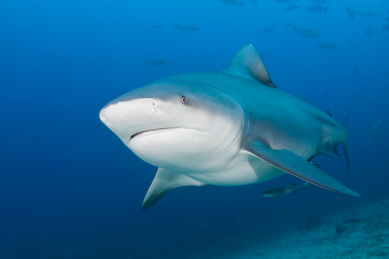
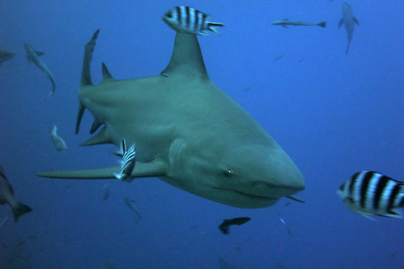

The bull shark (Carcharhinus leucas), is a species of requiem shark commonly found worldwide in warm, shallow waters along coasts and in rivers. It is known for its aggressive nature, and presence mainly in warm, shallow brackish and freshwater systems including estuaries and (usually) lower reaches of rivers.
The name "bull shark" comes from the shark's stocky shape, broad, flat snout, and aggressive, unpredictable behavior. In India, the bull shark may be confused with the Sundarbans or Ganges shark. In Africa, it is also commonly called the Zambezi River shark, or just "zambi". Its wide range and diverse habitats result in many other local names, including Ganges River shark, Fitzroy Creek whaler, van Rooyen's shark, Lake Nicaragua shark, river shark, freshwater whaler, estuary whaler, Swan River whaler, cub shark, and shovelnose shark.
- Wikipedia
